My son — this one is for you. I came across a study of Carl Jung’s thinking about the people the world calls late bloomers — the ones who seem to start behind — and how differently their clock actually runs. I turned it into the slides below. Read all the way to the last one; it says what I want you to hear.
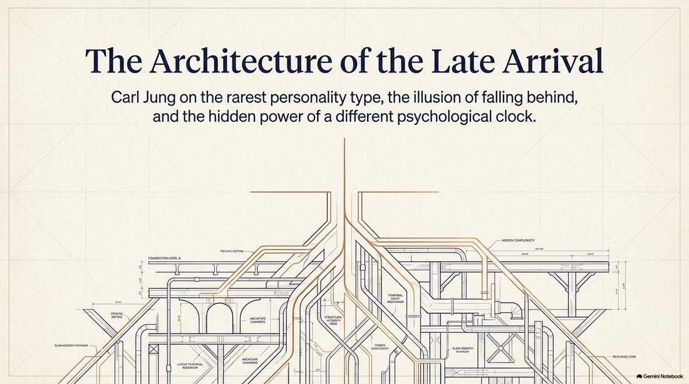
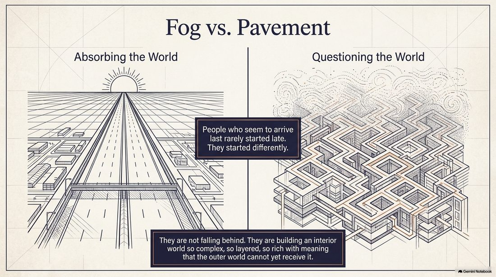
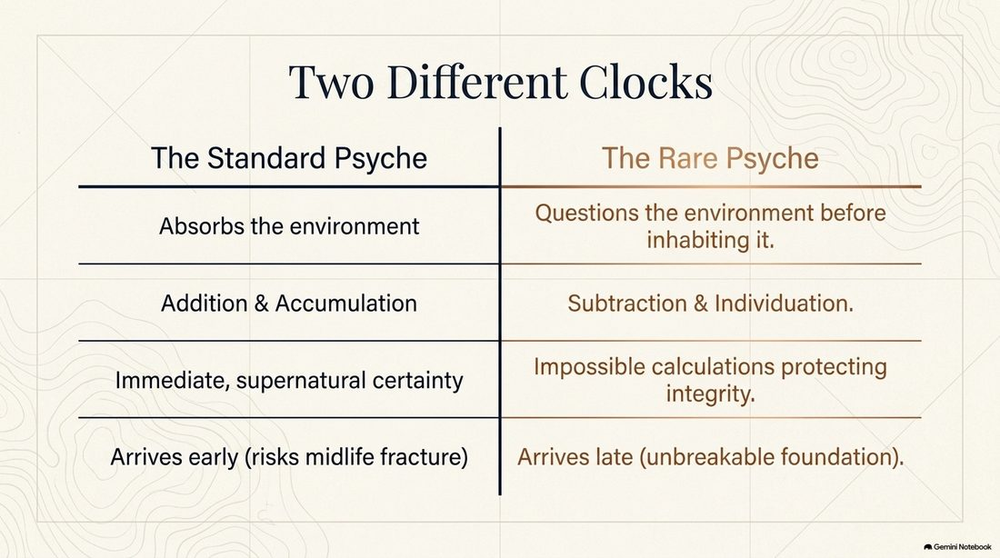
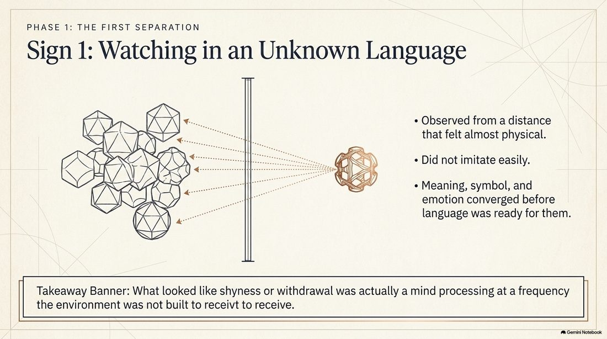
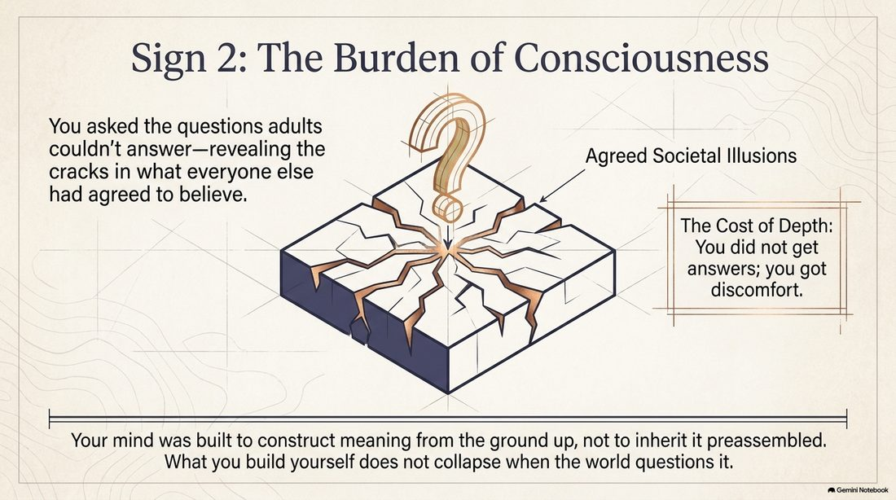
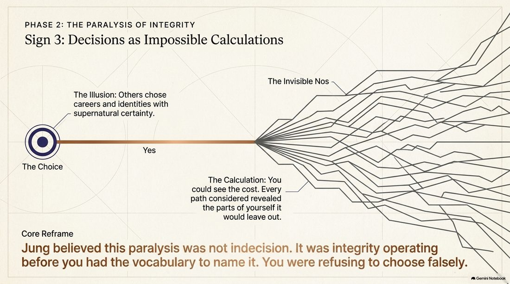
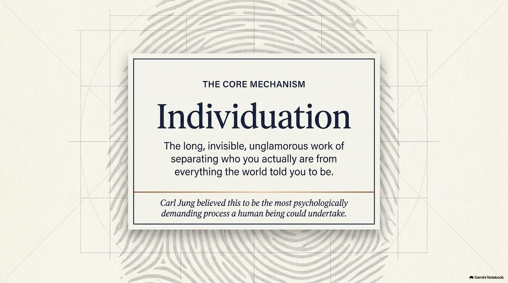
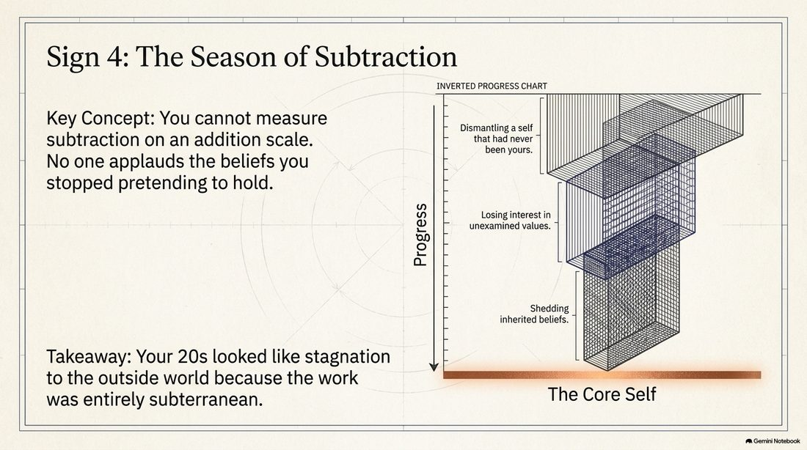
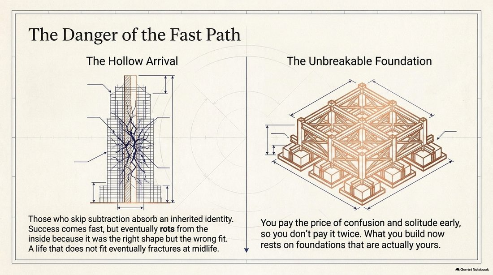
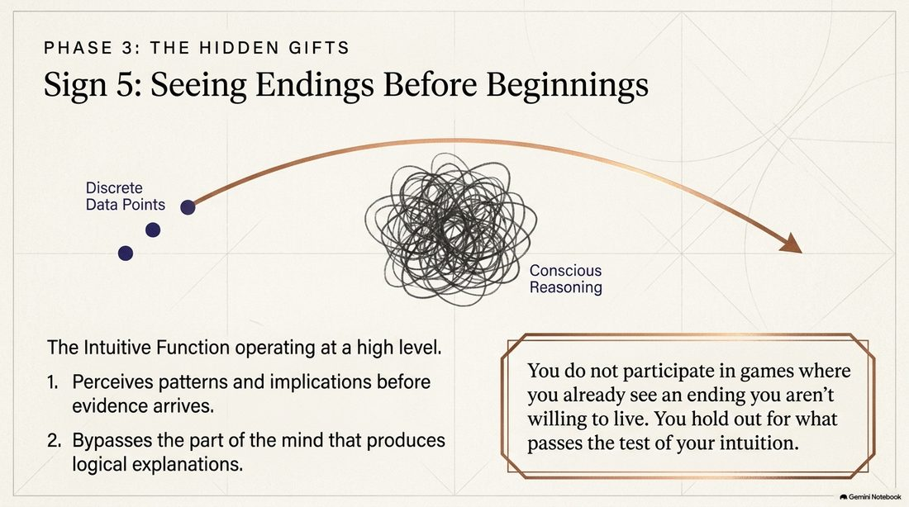
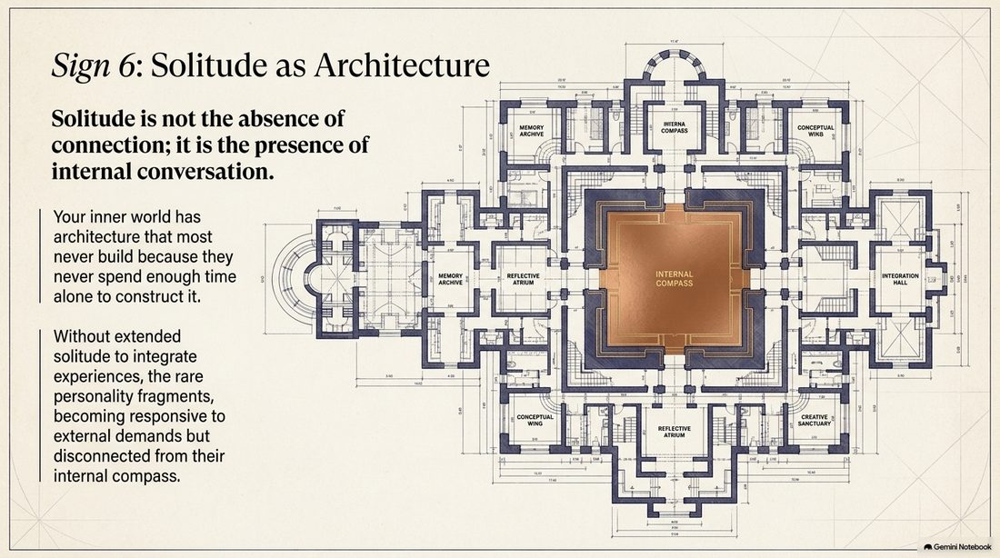
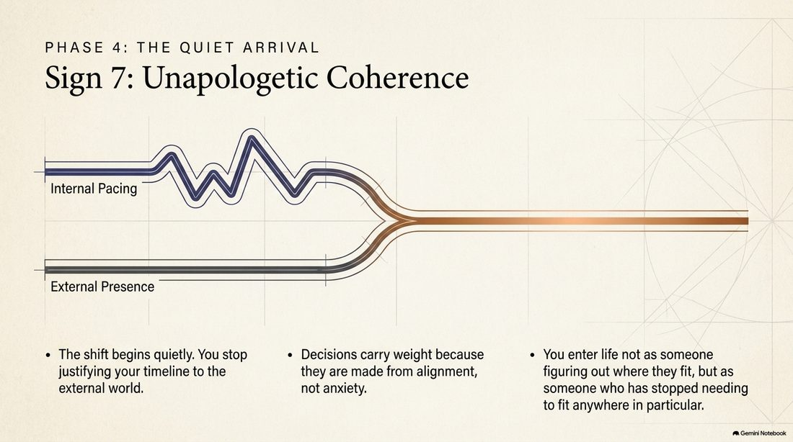
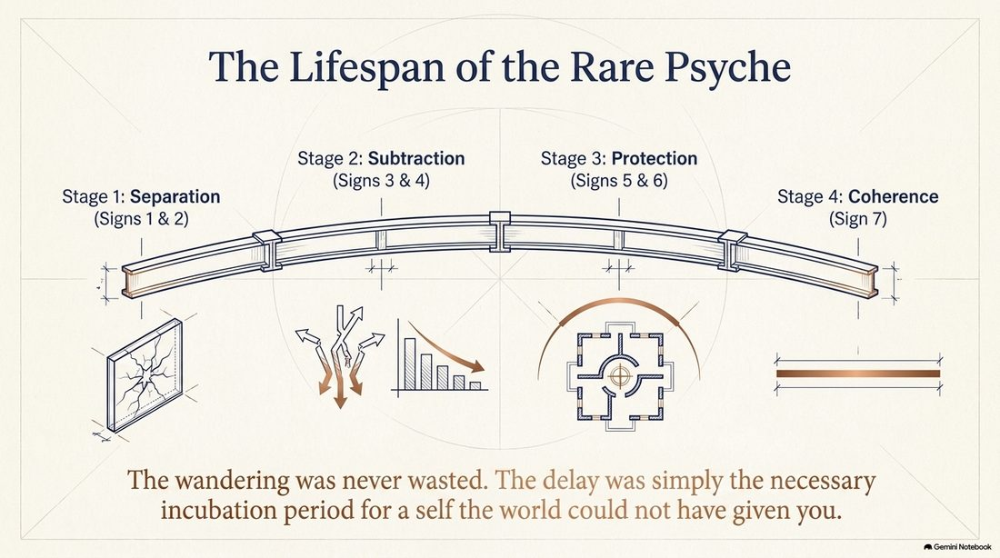
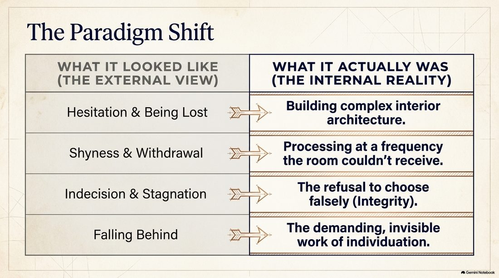
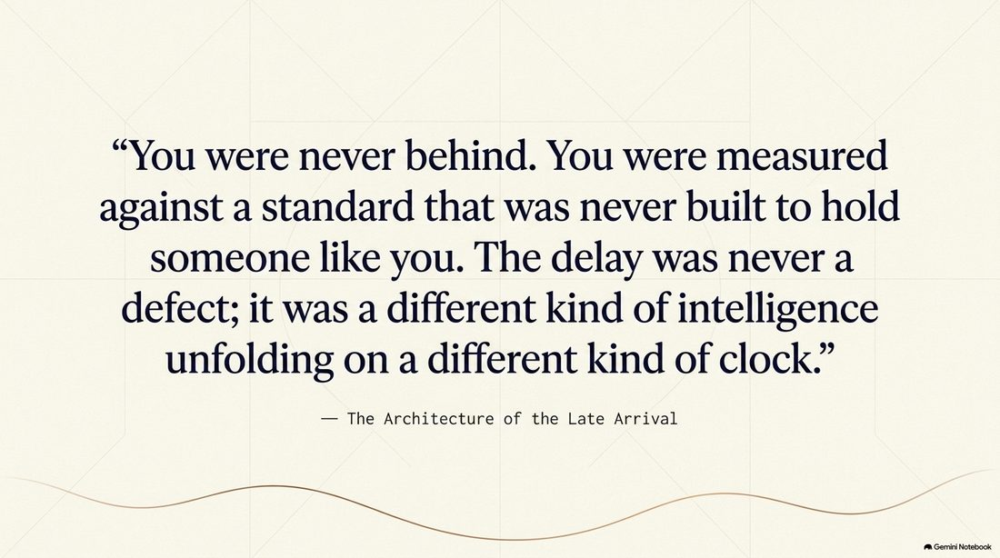
Love, Dad.
Comments